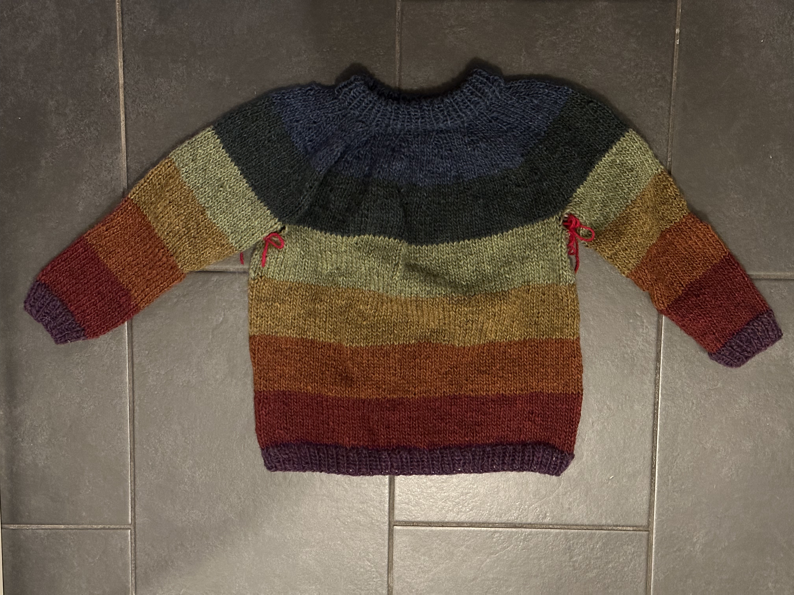
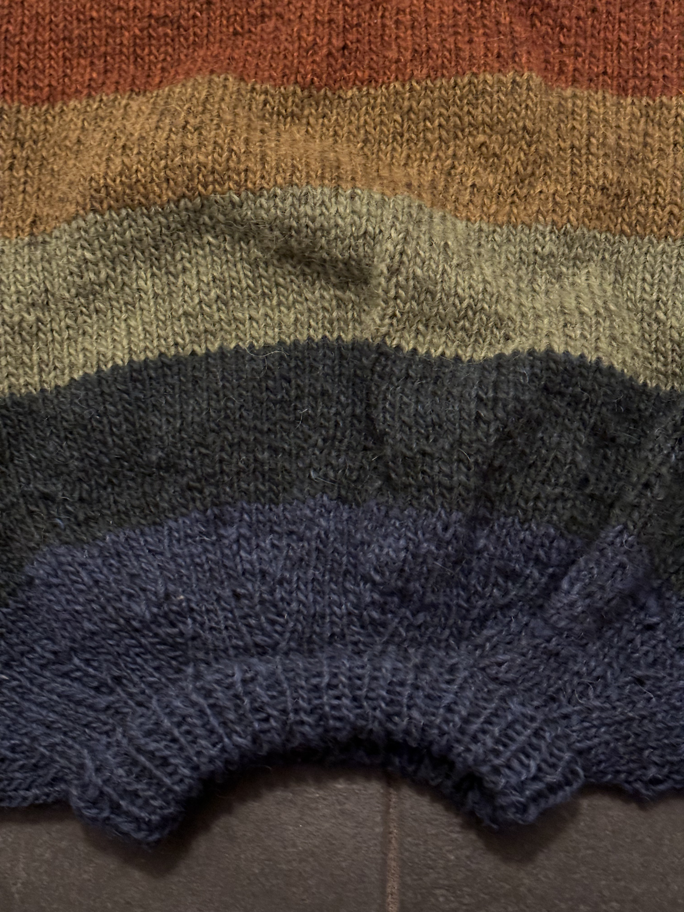
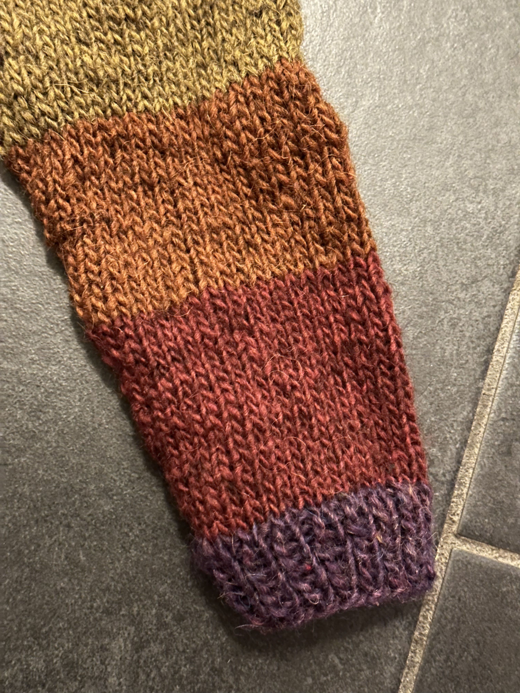
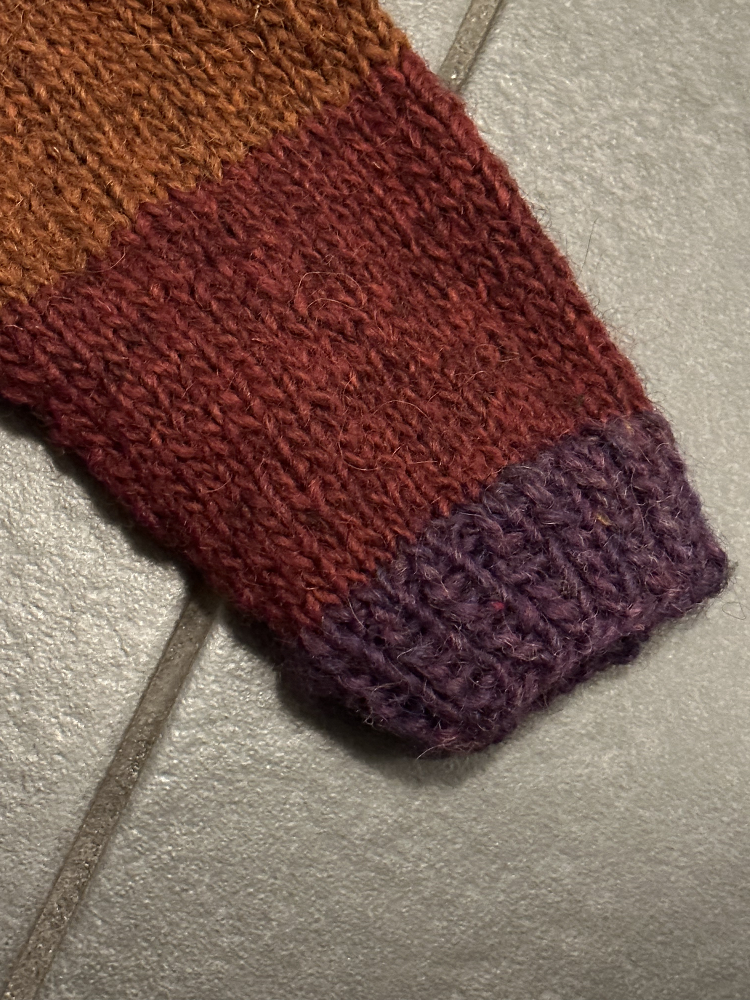
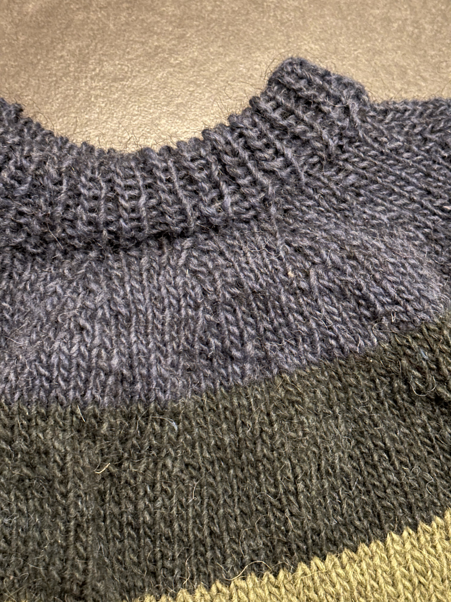

Barntröja i lettlopi
- 2 minutes read - 230 words
Vad finns att säga om denna tröja?
Det här är de anteckningar som jag hittade i keep:
fast mudden blev 3cm
bål
2 cm mudd
6cm rött
6cm orange
6cm gul
6cmm grön
ärmarna
ska vara 28cm
2 cm mudd
6,5 cm rött
6,5 cm orange
6,5 cm gul
6,5 cmm grön
STICKA IHOP
15-20varv ljusblå
15-20varv blå
Är det en plan från innan jag började? Skapad eller modifierad eftersom?
Poängen var att det blev så himla mycket lettlopi kvar efter min Afmaeli (Järbo) och… minns inte hur resonemanget fortsatte. Men började planera en barntröja!
Den är baserad på Järbos SLÓÐIR - BARNTRÖJA men på slutet så ville jag göra något annorlunda (tog garnet slut? är det relaterat till att jag inte gjorde mönstret i oket? vem vet!) och letade alternativ och tog då inspiration eller motsvarande från detta mönster: https://www.ravelry.com/patterns/library/horsetooth-pullover. Ser att det mönstret kostar nu? Det kan det inte ha gjort då, för jag har PDF:en och det ser mycket B ut.
Den verkar ha stickats under 2021, kanske avslutats i augusti för det är senaste ändringen i keep. Afmaeli blev klar i typ september 2020, så någonstans där. Hittar INGA bilder från projektet. Oktober 2023 har jag fortfarande inte sytt ihop under ärmarna och definitivt inte hanterat de lösa trådarna.
Gullig blev den iaf! Det knöggliga oket löser sig säkert med blockning, måste bara göra klart först.
   